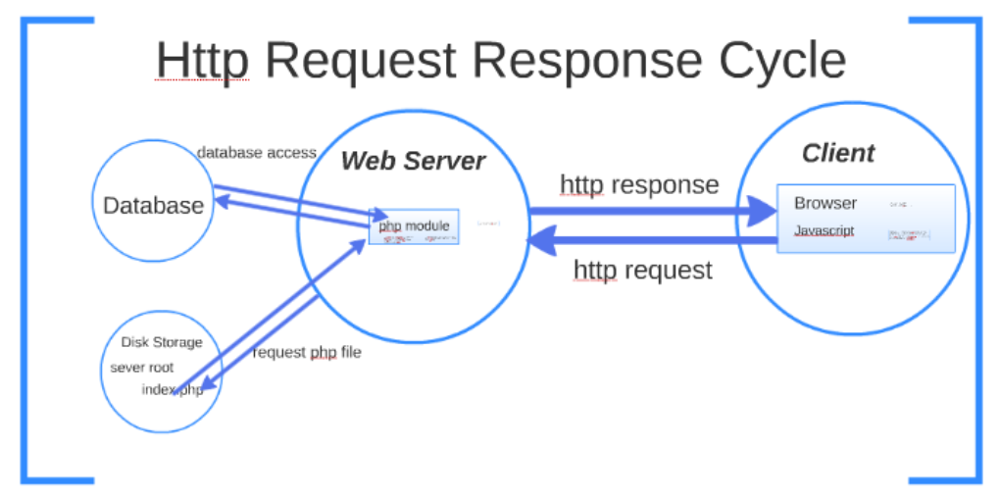

Wenn ein Client, beispielsweise ein Webbrowser, eine Ressource von einem Server anfordert, sendet er eine Anfrage (Request) an den Server. Die Anfrage enthält normalerweise Informationen darüber, welche Ressource (z. B. eine HTML-Seite oder ein Bild) angefordert wird und welche Parameter (z. B. Suchbegriffe oder Benutzeridentifikation) übermittelt werden sollen. Die Anfrage wird über das Internet zum Server gesendet.
Der Server empfängt die Anfrage, verarbeitet sie und sendet dann eine Antwort (Response) an den Client zurück. Die Antwort enthält normalerweise die angeforderte Ressource oder andere Daten, die auf die Anfrage des Clients bezogen sind. Die Antwort kann auch Informationen darüber enthalten, ob die Anfrage erfolgreich war oder ob ein Fehler aufgetreten ist.
Das Request-Response-Modell bildet die Grundlage für viele Webanwendungen und APIs, die auf HTTP (Hypertext Transfer Protocol) aufbauen. Es ermöglicht die Kommunikation zwischen Client und Server und ermöglicht es, Ressourcen und Daten über das Internet auszutauschen.
Schauen Sie sich untenstehende Formulare an und analysieren Sie sie
Was für Schlüsse ziehen Sie und was würden Sie verbessern? (Lösung hier notieren)
Nehmen Sie die Verbesserungen vor und verlinken Sie sie wieder in dieses Dokument